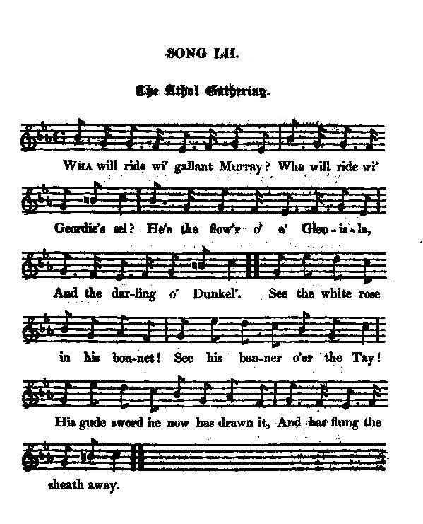

The Atholl Gathering
Le Rassemblement d'Atholl
Charlie's muster roll
Tune - Mélodie"Crowdy", also known as "Uillean, an tig thu chaoidh" (Willie, will you ever return)
from Hogg's "Jacobite Relics" 2nd Series N°52 page 97, 1821
Sequenced by Christian Souchon

|
To the tune: "Is a good song to an excellent tune. Captain Fraser has the air in his work as a Highland melody; but it has been sung on the Border for ages, to a song beginning— O that 1 had ne'er been married, I had ne'er had ony care! Now I've gotten wife an' bairns, An' they cry " crowdy" ever mair. Crowdy aince, an' crowdy twice, An' crowdy three times in the day, An' ye crowdy ony mair, Ye'll crowdy a' my meal away. The Border name of the tune of course is " crowdy." It was published in a small ephemeral collection of airs about forty years ago, under the name of " Nova Scotia." In Strathmore it is " The Athol Gathering," and captain Fraser calls it " Teann a nail is cum do ghealladh;" which may, for aught I know, mean something of the same with the song [N°144 page 58. The English title given by Simon Fraser is "Come along and keep your promise"; besides another version will be found on page 86 under N°210, titled "Uilleachan, an tigh thu chaoidh" (Willy, will you ever return)]. His is a very delightful set. The variations cannot be admitted in a simple air for the voice. So much for the air." Source "Jacobites Relics, 2ème série" (cf. Liens). |
A propos de la mélodie: "D'excellentes paroles sur un air excellent. Le capitaine Fraser présente cet air comme une mélodie des Highlands. Mais on l'a chanté dans les Borders pendant des siècles, avec des paroles commençant ainsi: Si j'étais célibataire Ah, quelle tranquillité! Mes enfants me désespèrent Ils ne pensent qu'à manger. Ils réclament leur potage Trois fois par jour tout au moins. S'ils en veulent d'avantage, Moi, je vais mourir de faim! Le nom de la chanson dans les Borders est bien sûr "Le potage". Elle a été publiée dans un petit et éphémère recueil de chansons, il y a environ 40 ans, sous le nom de "Nova Scotia". En Strathmore on l'appelle le "Rassemblement d'Atholl" et le Capitaine Fraser l'intitule " Teann a nail is cum do ghealladh;", en rapport, sans doute avec le contenu de la chanson [N°144 page 58. Le titre anglais indiqué par Simon Fraser est "Allons, tiens ta promesse"; en outre on trouvera une variante page 86, sous le N°210, intitulée "Uilleachan, an tigh thu chaoidh" (Willy, si tu reviens)]. L'arrangement qu'il en donne est proprement délicieux. Modifier un air à chanter n'est pas admissible. Il en va de même des paroles." Source "Jacobites Relics, 2ème série" (cf. Liens). |

|
THE ATHOL GATHERING 1. Wha will ride wi' gallant Murray ? Wha will ride wi' Geordie's sel? He's the flow'r o' a' Glen Isla, And the darling o'Dunkeld. See the White rose in his bonnet! See his banner o'er the Tay! His gude sword he now has drawn it, And has flung the sheath away. 2. Every faithful Murray follows; First of heroes! best of men ! Every true and trusty Stewart Blythely leaves his native glen. Atholl lads are lads of honour, Westland rogues are rebels a': When we come within their border, We may gar the Campbells claw. 3. O Menzies he's our friend and brother; Gask and Strowan are nae slack; Noble Perth has ta'en the field, And a' the Drummonds at his back. Let us ride wi' gallant Murray, Let us fight for Charlie's crown ; From the right we'll never sinder, Till we bring the tyrants down. 4. McKintosh, the gallant soldier, Wi' the Grahams and Gordons gay, They have ta'en the field of honour, Spite of all their chiefs could say, Bend the musket, point the rapier, Shift the brog for Lowland shoe, Scour the durk, and face the danger; Mckintosh has all to do. Source: "The Jacobite Relics of Scotland, being the Songs, Airs and Legends of the Adherents to the House of Stuart" collected by James Hogg, published in Edinburgh by William Blackwood in 1819. |
LE RASSEMBLEMENT D'ATHOLL 1. Avec Murray, qui chevauche? Mais c'est l'Elu de Dunkeld Que la déesse aux cent bouches Hisse au rang des immortels! A son bonnet, la cocarde! La Tay mira son drapeau! Vois, il a tiré son sabre, Au loin jeté le fourreau! 2. Suivent les Murray fidèles: De magnifiques champions! Les Stewart emplis de zêle, Sont venus de leurs vallons. Gens d'Atholl, votre droiture Fait des Campbell des martyrs! Si vous venez sur leurs terres, Ils n'ont qu'à bien se tenir! 3. Menzie, mon ami, mon frère, Gask et Strowan impatients, Et Perth: tous partent en guerre; Les Drummond en font autant. Voyez Murray qui chevauche! Rendons leur couronne aux Stuarts! Personne ne nous débauche. Mort aux tyrans, sans retard! 4. Puis McKintosh qu'accompagnent Graham et Gordon: Derechef Ils se sont mis en campagne Contre l'avis de leurs chefs: Préparer mousquets, rapières, Estocs, changer de souliers McKintosh à fort à faire Pour affronter le danger! (Trad. Christian Souchon (c) 2010) |
|
"For the song it seems to have been taken from an anonymous Jacobite poem of some merit, evidently written at the very time the clans were rising in 1745. The following short extract is almost in terms synonymous with the song. 1. The "gracious declaration", issued forth, Resound glad echoes thro' the spacious North, Repenting subjects, weeping, own their crimes, Curse the Usurper, and degen'rate times, With noble ardour rush into the field, For to such manly goodness all must yield. 2. See the bold chiefs their hardy warriors lead, Eager in such a cause, with such a head; Glengary, Keppoch, Appin, only weep These thirty years the cause has been asleep; Nor, good Glenbucket, loyal thro' thy life, Was't thou untimely in the glorious strife ; Thy chief degen'rate, thou his terror stood, To vindicate the loyal Gordons' blood; The loyal Gordons own the gen'rous call, With Charles and thee resolved to live or fall 3. See Athole's duke, in exile, ever true, His faithful toils for thee, his Prince, renew. By tyrants first, then by a brother spurned, Still, still with loyalty his bosom burned; One of the select, never-dying train Conveyed their Prince thro' dangers on the main ; See, how hereditary right prevails, And see Astraea poise the wayward scales! [1] Th' usurping brother to th' Usurper flees, While his return is echoed to the skies, And happy vassals to his standard flies. 4. His worthy brother, bursting into fame, Asserts the honour of the Murrays' name ; In council wise, and glorious in the field, His Prince's thunder born with grace to wield; To hurl destruction on invet'rate foes, And give Britannia long desired repose. 5. The Murrays, glowing with a gen'rous flame, Afford still subjects for the noblest theme; But these I pass:—their virtues speak their praise, Nor shall be lost by inexpressive lays; 6. But why, O Perth, why should I silent be, Nor tell the world the worth that lives in thee ? Thy hospitable doors to foes were wide, Even to the foes by whom thou wast betrayed ; But Heaven, thy guardian, stopped the threatened ill, And Perth preserved, and will preserve him still. 7. Elcho [2] — but words are weak, for who can tell What godlike actions have expressed so well ? 8. Beloved by all, see, Ogilvie appears A man in courage, though a youth in years ; Thy fame succeeding ages pleased shall read, And future Airlies emulate each deed. 9. Thee, Nairn and Gask, with raptures could I sing, Still true to God, your country, and your king, Loyal and just, sincere as weeping truth, The same in manhood as in early youth ; But while the sun the blue horizon gilds, Each little witness to his brightness yields. 10. Strowan, great chief, whom both Minervas crown, Illustrious bard, thou suffrer of renown, Long dimmed, like rays shot from a clouded star, In verse Apollo, and a Mars in war. 11. Menzies reserved to add a nobler grace, To an illustrious but forgotten race ; A race that added to the Brucian fame, And rises now with no less loyal flame. 12. Th' immortal Grahams, but ah ! without a head, Yet always show that loyalty's their creed. 13. These, mighty Prince, were men by Heaven's decree Reserved to catch new hopes and life from thee ; Reserved with thee to pull th' Usurper down, To right thy country, and to right thy crown." Source: "Jacobite Relics", Volume II, page 302 & ss. |
"Quant aux paroles, on les dirait tirées d'un poème Jacobite anonyme, dont on ne peut douter qu'il date du soulèvement des clans en 1745. L'extrait qu'on va lire suit pas à pas le texte du chant. 1. La "Déclaration gracieuse" produit Un effet profond partout dans le Nord Pleurant leurs forfaits, bien des repentis Maudissent ces temps et l'Usurpateur. Avec enthousiasme aux armes l'on court La mâle ardeur est communicative: 2. Voyez les chefs: comment feraient -ils pour Ne pas combattre avec l'ardeur requise? Glengarry, Keppoch, Appin, quel malheur Que depuis trente ans, la cause sommeille; Glenbucket vécut toujours dans l'honneur. Son ardeur fut à nulle autre pareille. Son chef choisit le mauvais camp? Qu'importe Sang loyal, Gordon, ne saurait mentir. A l'appel on voit surgir ses cohortes Voulant avec Charles vaincre ou mourir. 3. Vois le duc d'Atholl, fidèle exilé Pour son Prince il a ressaisi ses armes. Un frère, un tyran se sont conjurés Mais sa loyauté reste inébranlable. Il a fait parti de ce groupe étroit Qui guida Stuart sur la mer hostile. L'aîné voit enfin triompher ses droits Astrée pose sa balance futile. [1] Son frère félon rejoint les félons. Des vivats puissants saluent son retour: Ses vassaux se pressent sous son fanion. 4. Et le frère digne à la renommée Du nom de Murray ajoute la gloire. Sage conseiller, vaillant par l'épée Bras armé du Prince, il va dans l'histoire Etre celui qui détruit les factions, Assurant enfin le repos d'Albion. 5. Les Murray brûlent d'une ardente flamme. Je pourrais encor en parler longtemps. N'était leur renom qui mieux le proclame Que ne le fait mon malhabile chant. 6. Pourquoi passerai-je, Perth, sous silence, Les richesses que recèle ton sein? Ouvrant tes portes avec complaisance Même à ceux qui ne voulaient pas ton bien, Tu chargeas le Ciel de ta délivrance. Il l'a fait jadis, le fera demain. 7. Elcho [2] - tous mes mots ne servent de rien: Ta valeur, tes actes l'expriment si bien. 8. Aimé de tous, vois Ogilvie paraître, Adulte en courage et jeune en années. D'Airlie les générations à naître Liront et imiteront tes hauts-faits. 9. Quant à Nairn et Gask, je vois qu'il demeure Fidèle à son Dieu, son pays, son roi, Juste et loyal quand la vérité pleure, Aujourd'hui, demain, tout comme autrefois. Mais à l'horizon, le soleil décline Et tous les témoins de son éclat meurent. 10. Struan, chéri de la double Minerve, Poète illustre, et martyr de renom, Apollon des vers et Mars de la guerre, Astre, la nuée voilait tes rayons. 11. Les Menzie veulent restaurer le lustre D'une race illustre, hélas oubliée, Ayant eu sa part au renom de Bruce, Cette flamme vaut d'être ranimée. 12. Immortels Graham: Sans tête, ce corps Demeure loyal encor et encor. 13. Prince, c'est par eux, car le Ciel l'ordonne, Que seront, depuis ton vivant flambeau, Restaurés l'espoir, le droit, la couronne, De l'usurpateur creusé le tombeau." Source: "Jacobite Relics", Volume II, page 302 & ss. |
|
[1] Astraea: goddess of Justice. [2] Elcho: "David Wemyss, de jure 6th Earl of Wemyss (12 August 1721 - 29 April 1787), generally known as Lord Elcho, was a Scottish peer and Jacobite army officer. He was in Rome from October 1740 until April 1741, where, he met James Stuart. He was appointed a colonel of dragoons in the British Army in February 1744. Elcho joined Prince Charles Edward Stuart at Gray's Mill, near Edinburgh, on 16 September 1745, when he became the prince's first aide-de-camp and an original member of his council. Elcho fought at the Battle of Prestonpans on 21 September 1745. Elcho was one of the majority who at a council of war held at Derby in December 1745 advised the prince to return to Scotland rather than advance further into England and face almost certain death. Later, Elcho was present on 17 January 1746 at the siege of Falkirk and on 16 April 1745 at the battle of Culloden. Together with the Duke of Perth and other leaders of the Jacobite forces, he escaped to France in the frigate Mars on 3 May 1746. Elcho never returned to England, and for his part in the rising he was subject to the act of attainder passed in 1746 and his titles and lands were forfeited. Elcho continued his military career in France, where he entered the service of Louis XV and was captain in the Fitzjames's regiment, and colonel in the Royal Scots. In the latter post Elcho was with his regiment at Gravelines from June to October 1757 and then at Dunkirk in 1758. Dividing his time between France and Switzerland, he became naturalized in Neûchatel. He died in Paris in 1787, aged sixty-five, and was buried with his wife at Bôle in Switzerland. He left a precious narrative of the events in 1745-46 that Sir Walter Scott adopted as the principal authority for his 'History of the events of 1745'." Source: "Oxford Dictionary of National Biography" |
[1] Astrée: déesse de la Justice. [2] Elcho: "David Wemyss, 6ème comte de Wemyss "de jure" (12 aout 1721 - 29 avril 1787), communément appelé "Lord Elcho", était un pair du royaume d'Ecosse et un officier de l'armée Jacobite. Il séjourna à Rome d'octobre 1740 à avril 1741, où il rencontra Jacques Stuart. Il était colonel de dragons de l'armée anglaise en février 1744. Elcho se rangea aux côtés du Prince à Gray's Mill près d'Edimbourg, le 16 septembre 1745 et devint son premier aide-de-camp et membre de son conseil, dès l'origine. Il participa à la bataille de Prestonpans, le 21 septembre 1745. Il fit partie de cette majorité qui, lors d'un conseil tenu à Derby en décembre 1745, invita le Prince à se replier sur l'Ecosse, plutôt que de se risquer plus au sud. Il était également au siège de Falkirk, le 17 janvier 1746 et, le 16 avril 1746, à la bataille de Culloden. Avec le Duc de Perth et d'autres commandants Jacobites, il se réfugia en France à bord de la frégate "Mars", le 3 mai 1746. Il ne revint jamais en Angleterre. En raison de son rôle dans le soulèvement, il fut frappé de déchéance de ses droits et ses terres et ses titres furent confisqués. Elcho poursuivit sa carrière militaire en France où il entra au service de Louis XV et devint capitaine du Régiment Fitzjames puis colonel du Royal Ecossais. A ce poste, il fut à Gravelines avec son régiment de juin à octobre 1757, puis à Dunkerque en 1758. Partageant son temps entre la France et la Suisse, il fut naturalisé citoyen du canton de Neuchâtel. Il mourut à Paris en 1787, à l'âge de 65 ans et fut inhumé ainsi que sa femme à Baule, en Suisse. Il laissa une précieuse narration des événements de 1745-1746 qui est la source principale à laquelle Walter Scott se réfère dans son 'Histoire des événements de 1745'. Source: "Oxford Dictionary of National Biography" |